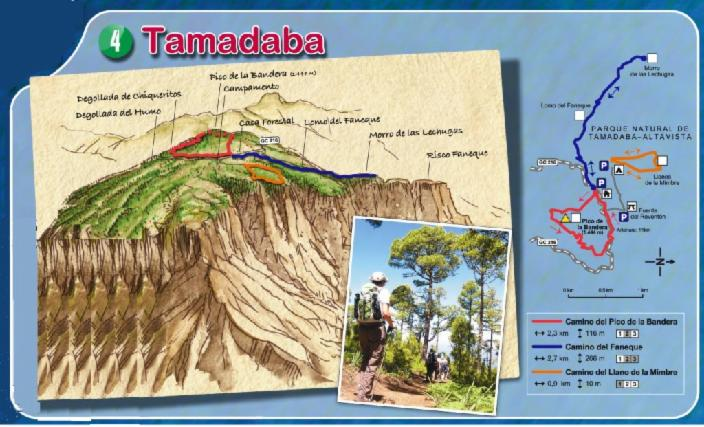

Tamadaba
El antiquísimo macizo montañoso de Tamadaba-Altavista situado en el noroeste de la isla es sin duda uno de sus espacios naturales de mayor riqueza biológica y paisajística que le han valido su declaración de Parque Natural, cuyo conocimiento y disfrute justifican plenamente su visita a pesar de su relativa lejanía de la capital insular.
Mientras que sus laderas noroccidentales son escarpadas, en gran parte acantilados que se alzan a más de 1000 metros sobre el mar, su zona superior se caracteriza por suaves lomas y llanos cubiertos de uno de los pinares naturales más antiguos de Canarias.

Los muchos visitantes que anualmente recibe, encuentran a su sombra diversas instalaciones de ocio como zonas de acampada y áreas recreativas así como una pequeña red de senderos para su goce y esparcimiento
A Tamadaba se llega por la carretera que pasa por Artenara, municipio que comparte este santuario natural con Agaete. Tambien se accede por la carretera que desde del sur sube de la Aldea de San Nicolás o desde el norte por Juncalillo, la cuales confluyen en el cruce de Acusa, a pocos kilómetros e Tamadaba.
Maspalomas
Con este nombre se conoce al principal núcleo turístico de la isla y a la famosa playa que constituye su mayor reclamo internacional, pero Maspalomas es también uno de los espacios naturales más representativos del Archipiélago, declarado Reserva Natural Especial y Lugar de Interés Comunitario (LIC) de la Red Natura 2000 europea. por su excepcional valor científico y singular belleza.
Situada en el extremo meridional de la isla y bendecida por una benigna climatología, la Reserva ocupa una extensión de 403,9 has estando básicamente constituida por un campo de dunas organógenas, un barranco con una laguna costera asociada y un palmeral.
Su Centro de Interpretación y el Parque “Tony Gallardo” son otros de los factores que hacen de este espacio uno de los mas visitados de la isla, principalmente por turistas residentes en la zona pero también por escolares, senderistas y amantes de la naturaleza.
Bandama
Bandama es un conjunto volcánico surgido hace 500 años en el transcurso del mismo proceso eruptivo que contribuyó a modelar definitivamente el paisaje del sector nororiental de la isla. En Bandama este proceso dio lugar a estructuras morfológicamente muy diferentes como son El Pico, cono de escorias y cenizas producto de una actividad de tipo estromboliano, y la Caldera, cráter de forma semielíptica de 1.100 metros de diámetro y 220 metros de profundidad, producido por explosión de origen freatomagmático.
El valor científico y la espectacularidad paisajística de este complejo volcánico le han ganado su inclusión el catalogo de Espacios Naturales Protegidos de Canarias con la categoría de Monumento Natural, declarado también Punto de Interés Geológico por el Instituto Tecnológico Geominero de España.
A su alto interés geológico se suma otros valores como el biológico por al gran numero de especies de fauna y especialmente de flora endémica que alberga la Caldera. Entre estas últimas destaca la Dama de Bandama, Parolinia glabriuscula, especie única que en este paraje tiene su exclusivo hábitat. Por su parte, la importancia del yacimiento arqueológico que alli se encuentra así como las numerosas muestras de su pasado reciente, confieren a toda la zona un alto valor histórico y etnográfico.
El Pico de Bandama es, con sus 560 m sobre el nivel del mar, el mirador natural desde el que se contempla la mas espectacular vista de la Caldera Bandama y una panorámica en 360º de todo el noreste insular. Estos atractivos unidos a su cómodo acceso por carretera le han llevado a ser importante referente turístico y uno de los lugares mas visitados de Gran Canaria. Por su parte, también la pequeña red de senderos del Monumento atrae cada día a un creciente número de senderistas y amantes de la naturaleza, foráneos y locales, que recorren sus más bellos rincones.